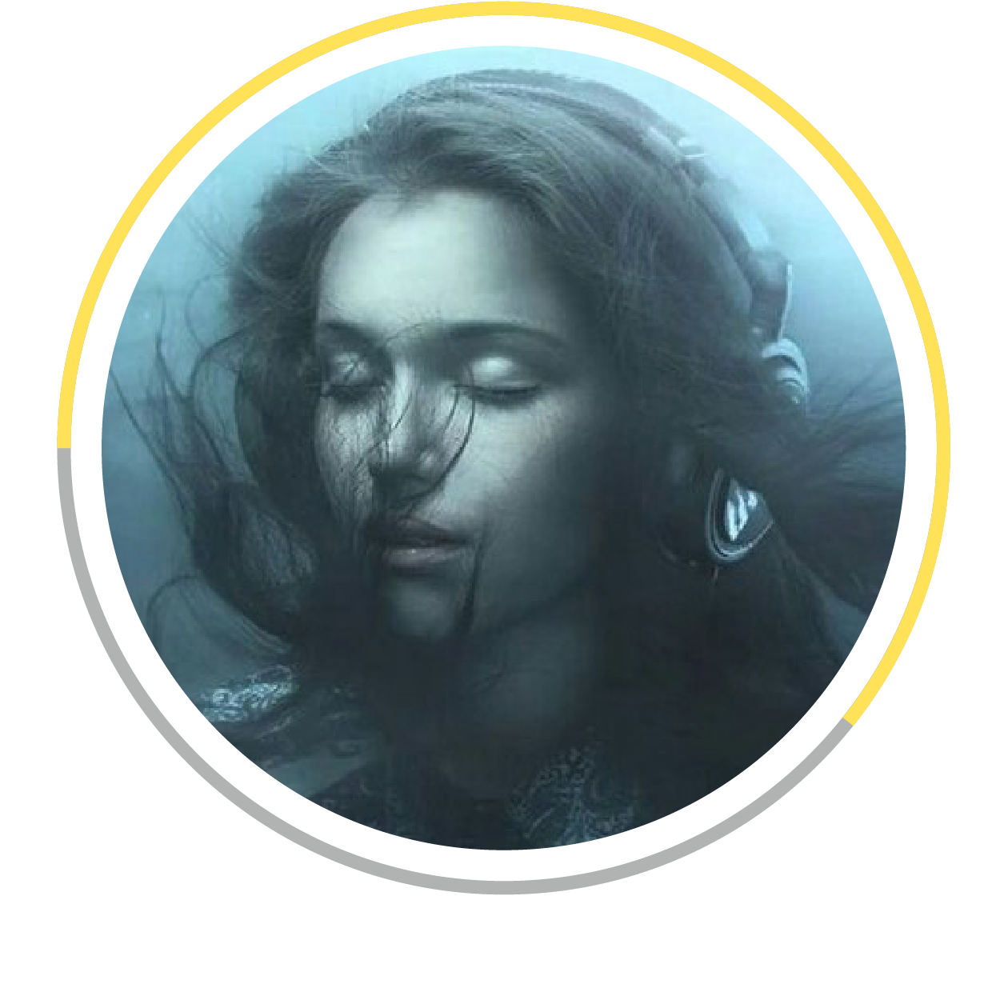

<!DOCTYPE html>
<html>
<head>
    <meta charset="utf-8">
    <meta name="viewport" content="initial-scale=1, maximum-scale=1, user-scalable=no, width=device-width">
    <title>Mushin.fm</title>
    <link href="lib/ionic/css/ionic.css" rel="stylesheet">
    <link href="assets/css/style.min.css" rel="stylesheet">

    <script src="assets/js/collide.js"></script>
    <!-- ionic/angularjs js -->


    <script src="lib/ionic/js/ionic.bundle.js"></script>

    <script src="assets/js/ionic.tdcards.js"></script>
    <!-- your app's js -->

    <script src="assets/js/scripts.min.js"></script>
</head>
<body ng-app="mushin">


    <ion-nav-bar class="bar-royal">
        <ion-nav-back-button>
        </ion-nav-back-button>

    </ion-nav-bar>

    <ion-nav-view></ion-nav-view>

    <script id="templates/intro.html" type="text/ng-template">
        <ion-view view-title="" class="tmpl-intro" hide-nav-bar="true" ng-controller="IntroCtrl">
            <ion-nav-buttons side="left">

                <button class="button button-positive button-clear no-animation" ng-click="startApp()" ng-show="!slideIndex">
                    Skip Intro
                </button>
                <button class="button button-positive button-clear no-animation" ng-click="previous()" ng-show="slideIndex > 0">
                    Previous Slide
                </button>


            </ion-nav-buttons>
            <ion-nav-buttons side="right">
                <button class="button button-positive button-clear no-animation" ng-click="next()" ng-show="slideIndex != 2">
                    Next
                    
                </button>
                <button class="button button-positive button-clear no-animation" ng-click="startApp()" ng-show="slideIndex == 2">
                    Start using MyApp
                </button>
            </ion-nav-buttons>
            <ion-content class="padding content-wrapper">
                <ion-slide-box on-slide-changed="slideChanged(index)">
                    <ion-slide>
                        <div>
                            
                        </div>
                        <br>
                        <h3>
                        Meet the smartest music platform in the world that lets you listen to your favourite music in public venues.</h3>
                    </ion-slide>
                    <ion-slide>
                        <div>
                            
                        </div>
                        <br>
                        <h3>Tell the others how you feel about the music. Swipe right to listen now or left to listen later.</h3>
                    </ion-slide>
                    <ion-slide>
                        <div>
                            
                        </div>
                        <br>
                        <h3>Contribute to the venue’s playlist by suggesting your own songs. They will automatically be seen and voted by the others.</h3>
                    </ion-slide>
                </ion-slide-box>

                <div class="signup">
                    <button class="button button-full button-positive" ng-click="startApp()">
                        Sign in with Facebook
                    </button>
                </div>
            </ion-content>
        </ion-view>
    </script>

    <script id="templates/tabs.html" type="text/ng-template">
        <ion-view class="tmpl-main" hide-back-button="false" hide-nav-bar="false">
            <ion-tabs class="tabs-clear tabs-top tabs-icon-top tabs-icon-only">
                <ion-tab ui-sref="tabs.menu" title="Menu" icon-on="ion-navicon-round" icon-off="ion-navicon-round">
                    <ion-nav-view name="menu-tab"></ion-nav-view>
                </ion-tab>

                <ion-tab ui-sref="tabs.play" title="Suggestions" icon-on="ion-music-note" icon-off="ion-music-note">
                    <ion-nav-view name="play-tab"></ion-nav-view>
                </ion-tab>

                <ion-tab ui-sref="tabs.nowPlaying" title="Now Playing" icon-on="ion-play" icon-off="ion-play">
                    <ion-nav-view name="nowPlaying-tab"></ion-nav-view>
                </ion-tab>

                <ion-tab ui-sref="tabs.playlist" title="Playlist" icon-on="ion-ios-list" icon-off="ion-ios-list">
                    <ion-nav-view name="playlist-tab"></ion-nav-view>
                </ion-tab>

                <ion-tab ui-sref="tabs.search" title="Search" icon-on="ion-ios-search-strong" icon-off="ion-ios-search-strong">
                    <ion-nav-view name="search-tab"></ion-nav-view>
                </ion-tab>
            </ion-tabs>
        </ion-view>
    </script>

    <script id="templates/menu.html" type="text/ng-template">
        <ion-view class="tmpl-menu" hide-back-button="true" view-title="Menu" hide-nav-bar="true">
            <ion-content class="padding">
                <h4>MUSHIN.FM</h4>
                <br>
                <div class="profile">
                    <div class="list list-clear">
                        <a class="item item-thumbnail-left" href="#">
                            
                            <h2>Rareș Drăgan</h2>
                            <p>
                                <strong>16</strong> Followers <br>
                                <strong>214</strong> Favorites
                            </p>
                        </a>
                    </div>
                </div>
                <div class="user-menu">
                    <div class="list list-clear">
                        <a class="item item-icon-left" href="#">
                            <i class="icon ion-person"></i>
                            Account
                        </a>
                        <a class="item item-icon-left" href="#">
                            <i class="icon ion-music-note"></i>
                            Songs
                        </a>
                        <a class="item item-icon-left" href="#">
                            <i class="icon ion-android-favorite"></i>
                            Favorites
                        </a>
                        <a class="item item-icon-left" href="#">
                            <i class="icon ion-ios-location"></i>
                            Locations
                        </a>
                    </div>
                </div>
                <button class="button button-block button-large button-energized" ng-click="toIntro()">
                    Log out
                </button>
            </ion-content>
        </ion-view>
    </script>

    <script id="templates/play.html" type="text/ng-template">
        <ion-view class="tmpl-play text-white" hide-back-button="true" view-title="Play" hide-nav-bar="true">
            <ion-content class="padding" scroll="false">
                <div ng-if="cards.active">

                    <div class="play-buttons">
                        <button class="button button-clear btn-reject">
                            <i class="icon ion-ios-close-outline"></i>
                        </button>
                        <button class="button button-clear btn-accept">
                            <i class="icon ion-ios-checkmark-outline"></i>
                        </button>
                    </div>
                    <td-cards>
                        <td-card ng-repeat="card in cards.active" on-destroy="cardDestroyed($index)" on-swipe-left="cardSwipedLeft($index)" on-swipe-right="cardSwipedRight($index)">
                        <div class="play-header" ng-if="$index==0">
                            <div class="item-avatar">
                                
                            </div>
                            <span class="author">{{ card.user.name }}</span>
                            <br>
                            <span class="text">wants to listen to</span>
                        </div>
                        <div class="image" ng-controller="CardCtrl">
                            <div class="no-text"><i class="icon ion-thumbsdown"></i></div>
                            <div class="yes-text"><i class="icon ion-thumbsup"></i></div>
                            
                        </div>
                        <div class="play-details" ng-if="$index==0">
                            <h4 class="song-name">{{ card.song.name }}</h4>
                            <h5 class="artist-name">{{ card.song.artist }}</h5>
                            <div class="likes">
                                {{ card.likes }} <i class="icon ion-thumbsup"></i>
                            </div>
                        </div>
                        </td-card>
                        <td-card id="end-card" drag="false">
                            <i class="icon ion-ios-refresh disable-user-behavior" ng-click="refreshCards()"></i>
                        </td-card>
                    </td-cards>
                </div>
            </ion-content>
        </ion-view>
    </script>

    <script id="templates/nowPlaying.html" type="text/ng-template">
        <ion-view class="tmpl-nowPlaying" hide-back-button="true" view-title="Now Playing" hide-nav-bar="true">
            <ion-content class="padding">
                <div class="author">
                    <div class="name">Rareș Drăgan</div>
                    <div class="text">Changed the music at <span class="location">Spherik</span></div>
                </div>
                <div class="song">
                    
                </div>
                <div class="song-details">
                    <h4 class="song-name">Deliverance</h4>
                    <h5 class="artist-name">RY X</h5>
                    <div class="likes">
                        27 <i class="icon ion-thumbsup"></i>
                    </div>
                </div>
                <div class="song-actions">
                    <button class="button button-clear btn-favorite">
                        <i class="icon ion-ios-heart-outline"></i>
                    </button>
                    <button class="button button-clear btn-share">
                        <i class="icon ion-ios-redo-outline"></i>
                    </button>
                </div>
            </ion-content>
        </ion-view>
    </script>

    <script id="templates/playlist.html" type="text/ng-template">
        <ion-view class="tmpl-playlist" hide-back-button="true" view-title="Playlist" hide-nav-bar="true">
            <ion-content class="">
                <h4 class="padding">Playlist</h4>
                <div class="list">
                    <div ng-repeat="item in items" class="item item-thumbnail-left">
                    
                    <h2>{{ item.album }}</h2>
                    <h4>{{ item.artist }}</h4>
                    </div>
                </div>
            </ion-content>
        </ion-view>
    </script>

    <script id="templates/search.html" type="text/ng-template">
        <ion-view class="tmpl-search" hide-back-button="true" view-title="Search" hide-nav-bar="true">
            <ion-content class="search-results">
                <div class="search-box">
                    <label class="item item-input">
                        <input type="text" placeholder="Search" ng-model="query">
                    </label>
                </div>
                <ion-list>
                    <ion-item ng-repeat="item in items | filter:query" ui-sref="search-details({id: item.id})" class="item item-thumbnail-left">
                        
                        <h2>{{ item.album }}</h2>
                        <h4>{{ item.artist }}</h4>
                    </ion-item>
                </ion-list>
            </ion-content>
        </ion-view>
    </script>

    <script id="templates/search.details.html" type="text/ng-template">
        <ion-view view-title="" class="tmpl-search-details text-white">
            <ion-nav-buttons side="left">
                <button class="button back-button buttons button-clear header-item" ng-click="goBack()">
                    <i class="icon ion-ios-arrow-back"> Back to results</i>
                </button>
            </ion-nav-buttons>
            <ion-content class="padding item-details">
                
                <h3>{{ item.album }}</h3>
                <h4>{{ item.artist }}</h4>
                <button class="button button-large button-energized zbtn-primary" ng-click="submitSong()">
                    Submit song
                </button>
            </ion-content>
        </ion-view>
    </script>

</body>
</html>
